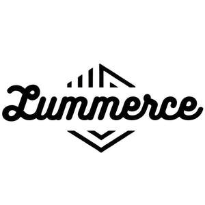

Trade Mark Journal No.2025/040 3 October 2025
UK00004267165 20 September 2025 (3,30,31)

- Class 3
- Eau de Cologne; Cuticle oils; Massage oils; Non-medicated skin lotions; Cosmetic creams for the skin; Eye-shadow; Eyebrow powder; Make-up removers; Bath foam; Nail whiteners; Toothpastes; Moisturisers [cosmetics]; Deodorant soap; Washing soda, for cleaning; Washing powder; Anti-aging creams [for cosmetic use]; Lotions for the skin; Hair care serums; Nail strengtheners; Skin lotions; Cosmetics for use in the treatment of wrinkled skin; Car shampoos; Anti-perspirants for personal use; Gels for fixing hair; Skin whitening preparations; Tooth powder; Skin moisturizer; Skin balms [cosmetic]; Eye make-up; After-sun lotions; Baby wipes; Cleaning preparations; Aftershave; Bleach; Oils for hair conditioning; Bleaching soda; Laundry sizing; Non-medicated hair shampoos; Skin cleansing cream; Moisturiser; Shower and bath gel; Hair relaxers; Sun block [cosmetics]; Talcum powders; Creams (Skin whitening -); Nail gel; Hair colourants; Sun-tanning gels; Nail paint [cosmetics]; Nail polish; Toilet soap; Chewable dentifrices; Scented body lotions and creams; Concealers; Skin emollients; Baby bath mousse; Cosmetic sun oils; Hair gel; Conditioners for treating the hair; Body powder (Non-medicated -); Eye gels; Soap; Cosmetics for animals; Hair conditioners for babies; Soaps in gel form; Multifunctional makeup; Antiperspirants [toiletries]; Suntan creams; Body deodorants [perfumery]; Nail tips [cosmetics]; Bubble bath preparations; Facial lotions; Ionone [perfumery]; Cleansing gels; Antiperspirants for personal use; Sun creams; Bath and shower gels; Lip gloss palettes; Non-medicated toothpaste; Extracts of flowers [perfumes]; Skin toner; Eau de cologne; Bath and shower gel; Balms (Non-medicated -); Blush pencils; Nail polish pens; Creams for firming the skin; Solid toothpaste tablets; Skin creams [for cosmetic use]; Wax (Laundry -); Skin cleansing lotion; Shaving oils; Exfoliants for the cleansing of the skin; Eyebrow mascara; Body mask lotion; Saddle soap; Skin whitening creams; Oils for perfumes and scents; Tanning gels [cosmetics]; Shampoos for babies; Liquid bath soap; Eaux de toilette; Make-up; Make-up for compacts; Skin cleansing cream [non-medicated]; Baby shampoo mousse; Liquid dentifrice; Aromatics for perfumes; Exfoliants for the care of the skin; Aftershave balms; Hair balms; Lip rouge; Make-up removing gels; Bath soap; Colour cosmetics for the skin; Hairstyling serums; Beauty balm creams; Cosmetic creams; Laundry soap; Sun-tanning creams and lotions; Eyeliners; Nail polish base coat; Deodorants for body care; Polishing wax; Baby lotion; Facial creams [cosmetics]; Skin lotion; After-shave creams; Soap powder; Essential oils; Hair creams; Sunscreen creams; Sun-tanning creams; Lip makeup; Baby bottom balm; Heliotropin; Dental bleaching gels; Bleaching salts; Skin balms (Non-medicated -); Laundry powder; Dental bleaching gel; Carbolic soaps; Skin hydrators; Hair lotions; Milky lotions for skin care; Soap powders; Massage oils and lotions; Laundry fabric conditioner; Eyelid doubling makeup; Carpet shampoo; Bleaching preparations and other substances for laundry use; Sun protection preparations; Swallowable toothpaste; Anti-aging moisturizers used as cosmetics; Bath gel; Anti-aging serum for cosmetic use; Prepared wax for polishing; Hair conditioners; Make-up remover; Non-medicated creams; Talcum powder [for toilet use]; Hair oils; Aftershave moisturising cream; Powder (Make-up -); Bath gels; Face powder; Body deodorants; Nail polish remover pens; Make-up palettes containing cosmetics; Lipsticks; Polishing paper; Shower and bath foam; Non-medicated pet shampoos; Shaving balms; Washing balls filled with laundry detergents; Suntan lotions; Lip balms [non-medicated]; Bleaching preparations for laundry use; Sunscreen lotions; Hair mousses; Anti-aging moisturizers; Skin cleansers; Hair moisturisers; Personal deodorants; Toothpaste in soft cake form; Bluing for laundry; Anti-perspirants in the form of sprays; Gels (Dental bleaching -); Laundry blue; Teeth whitening strips impregnated with teeth whitening preparations [cosmetics]; Hair balm; Eau de parfum; Hair dye; Bath cream; Perfumed creams; Shampoo; Preparations for protecting the hair from the sun; Hair conditioner bars; Body powder; Aftershave gels; Foundation make-up; Bleaching (Leather -) preparations; Lip gloss; Fragrance refills for non-electric room fragrance dispensers; Aftershaves; Anti-perspirant preparations; Baby suncreams; Perfume water; Handmade soap; Soapy gels; Hand gels; After-shave balms; Face blusher; Lip glosses; Non-medicated bubble bath preparations; Feminine deodorant sprays; Hair mascara; Eyeshadows; Extracts of flowers being perfumes; Shampoo bars; Shampoos for human hair; After-sun lotions [for cosmetic use]; Foaming bath gels; Soap sheets; Aromatics for fragrances; Hair conditioner; Bleaching preparations [laundry]; Moisturizing body lotions; Lipstick; Cheek colours; Eye concealers; Makeup setting sprays; Shave balm; Perfumes for ceramics; Flowers (Extracts of -) [perfumes]; Cosmetics for protecting the skin from sunburn; Cosmetic creams for dry skin; Makeup; Anti-wrinkle creams [for cosmetic use]; Bleaching preparations [decolorants] for cosmetic purposes; Shaving lotions; Eau de colognes; Cleansing balm; Wiping cloth impregnated with a cleaning preparation for cleaning eye glasses; Facial moisturisers [cosmetic]; Household fragrances; Bleaching preparations for household use; Polishing creams; Aromatherapy creams; Foams for the bath; Anti-aging creams; Cleaning sprays; Aftershave lotions; Room fragrances; Skin creams [cosmetic]; Perfumes for cardboard; Polishing rouge; Non-medicated balm for hair; Moisturisers; Skin cleansers [cosmetic]; Bubble bath [for cosmetic use]; Leather bleaching preparations; Face gels; Eyelash tint; Dyes for the hair; Tooth whitening pastes; Non-medicated moisturisers; Hand lotion (Non-medicated -); Styling gels for the hair; Skin foundation; Colour cosmetics; Mouthwashes; Moisturising skin lotions [cosmetic]; Hair pomades; Eyeshadow; Sun-block lotions; Incense spray; Foot deodorant spray; Bath gels (Non-medicated -); Bath foams; Eaux de cologne; Cologne water; Skin toners [cosmetic]; Hair serums; Lip cream; Make-up removing creams; Laundry wax; Hair moisturising conditioners; Fragrances for automobiles; Polishing powders; Bubble bath; Baby powder; Cuticle oil; Laundry liquids; Foot balms (Non-medicated -); Liquid soap for dish washing; Body fragrances; Body gels; Leather and shoe cleaning and polishing preparations; Moisturizing preparations for the skin; Bubble bath preparations [for cosmetic use]; Hair powder; Cosmetic eye gels; Cosmetic suntan lotions; Anti-ageing serum; Hair lighteners; Moisturising creams, lotions and gels; Non-medicated lip balms; Sun blocking lipsticks [cosmetics]; Creams for tanning the skin; Gels for cosmetic purposes; Day lotion; Varnish (Nail -); Skin moisturizers used as cosmetics; Anti-perspirant deodorants; Laundry detergents; Cleaning preparations for cleansing drains; Pre-shave gels; Potpourris [fragrances]; Chalk for make-up; Soap (Antiperspirant -); Soap (Deodorant -); Anti-ageing creams [for cosmetic use]; Cosmetics for eye-lashes; Make-up primer; Bath bombs; Skin make-up; Laundry blueing; Sun care lotions; Cleansing creams; Hair lotion; Polishing preparations; Gel nail removers; Make-up removing lotions; Cosmetics for the treatment of dry skin; Bath milk; Hair styling gels; Nail enamel remover; Skin lighteners; Depilatory lotions; Deodorants for animals; Hair shampoos; Nail polish removers; Eau-de-toilette; Skin texturizers; Body moisturisers; Beauty creams; Dry shampoos; Natural oils for perfumes; Lip conditioners; Eyes make-up; Blueing for laundry; Nail varnishes; Make-up base; Eyeshadow palettes; Sun protectors for lips; Sun tan milk; Cleansing lotions; After-shave lotions; Lip balm; Facial creams; Skin moisturisers; Sun bronzers; Make-up pencils; Mattifying gel cream; Laundry bleach; Perfumed soap; Skin creams [non-medicated]; Make-up primers; Liquid soap for laundry; Teeth cleaning lotions; Suncare lotions; Dusting powder; Breath fresheners in the form of chew sticks made from birchwood extracts; Emollient shampoos; Exfoliating creams; Eyeliner; Eye makeup; Commercial laundry detergents; Hair rinses; Shaving lotion; Hair bleaches; Suntan lotion [cosmetics]; Shower and bath preparations; Loofah soaps; After sun moisturisers; Creamy rouge; Baby hair conditioner; Non-medicated skin creams; Eyebrow cosmetics; Cakes of soap; Patches containing sun screen and sun block for use on the skin; Make-up foundation; Gels for cosmetic use; Cloths impregnated with polishing preparations for cleaning; Non-medicated bath salts; Facial concealer; Mascara; Waterless soap; Blush; Hand soap; Face glitter; Shaving creams; Mouthwash; Nail polish remover; Cosmetic creams and lotions; Scented body lotions; Nail enamels; Perfume oils; Roll-on deodorants [toiletries]; Sun screen; Anti-perspirants; Soap products; Nail polish top coat; Body lotion; After-shave; Nail polish removers [cosmetics]; Almond soap; Natural makeup; Dentifrices and mouthwashes; Foam bath; Deodorants and antiperspirants; Cuticle conditioners; Nail cream; Cosmetic moisturisers; Sun protecting creams [cosmetics]; Skin cream; Organic makeup; Laundry soaps; Conditioners for use on the hair; Styling gels; Facial moisturizers; Waterless shampoos; Bath creams; Moisturising skin creams [cosmetic]; Nail makeup; Liquid perfumes; Anti-wrinkle creams; Moisturizers; Fragrance sachets; Room perfume sprays; Lip tints; Make-up for the face; Nail enamel; Eau de toilette; Eye makeup remover; Eaux de Cologne; Hair bleach; Skin toners [cosmetic]; Fragrances; Hair protection gels; Creams (Soap -) for use in washing; Hair mousse; Sunscreens [for cosmetic use]; Sun tan oil; Nail hardeners [cosmetics]; Aftershave balm; Shampoo for animals; Talcum powder (Non-medicated -) for babies; Laundry bleaching preparations; Oils for the skin; Baby oil; Lipstick; Cologne; Perfumed creams; Shampoo; Soap; Cleaning preparations; Massage oils; Nail polish; Toothpaste; Cosmetics.
- Class 30
- Cake Pops; Cereals for use in making pasta; Corn candy; Pop corn; Starch vermicelli; Potato flour; Curry [spice]; Canned spaghetti in tomato sauce; Chrysanthemum tea (Gukhwacha); Bread flavored with spices; Cocoa powder; Saffron for use as a seasoning; Prepared cocoa and cocoa-based beverages; Pasta dishes; Fruit coulis [sauces]; Instant cocoa powder; Sauces [condiments]; Rice crisps; Noodle-based prepared meals for toddlers; Butterscotch chips; Coffee flavorings; Chocolate coffee; Filled pasta; Tieguanyin tea; Candies [sweets]; Gluten additives for culinary purposes; Edible fruit ices; Saffron salt for seasoning food; Ramen [Japanese noodle-based dish]; Molasses syrup for food; Sugar; Candies; Vegetable pastes [sauces]; Vermicelli; Coffee drinks; Herb sauces; Bubble gum; Vermicelli [noodles]; Fruit sugar; Flour of millet; Rice cake snacks; Dried pieces of wheat gluten (fu, uncooked); Rice cakes; Canned sauces; Breakfast cereals, porridge and grits; Flavoured coffee; Tarts; Chocolate confections; Flavouring syrups; Seitan [dried wheat gluten]; Peppers [seasonings]; Cereal preparations coated with sugar and honey; Honeys; Sweets (candy), candy bars and chewing gum; Puffed rice; Rice flour; Cappuccino; Snacks manufactured from muesli; Cinnamon [spice]; Pasta products; Barley flour for food; Curry powder; Clove powder [spice]; Candies (Non-medicated -) with honey; Seafood flavoured condiments; Chocolate caramel wafers; Non-dairy ice cream; Ginger [powdered spice]; Chocolate marzipan; Vegetable purees [sauces]; Rice dumplings; Chutneys [condiment]; Vegan cakes; Caramels [candies]; Peppermint tea; Noodles; Kelp tea; Soya flour; Wheat flour [for food]; Flavorings and seasonings; Hot dog sandwiches; Sweets (Non-medicated -) being honey based; Foodstuffs made of sugar for sweetening desserts; Chocolate cakes; Unroasted coffee beans; Corn flour [for food]; Cocoa products; Coffee; Barley tea; Fruit ice; Mustard for food; Buckwheat noodles; Beverages with a cocoa base; Muesli desserts; Savoury pancakes; Snack food products made from cereal flour; Edible flour; Sweetmeats [candy] containing fruit; Cereal flour; Candy cake; Snack foods prepared from maize; Pita chips; Candy cake decorations; Curry powder [spice]; Sugarfree chewing gum; Chocolate candy with fillings; Theine-free tea with added sweeteners; Baking powder; Flour confectionery; Pizza sauce; Helichrysum honey; Spices in the form of powders; Honey glazes for ham; Chinese noodles; Fish sandwiches; Foods with a cocoa base; Herbal honey lozenges [confectionery]; Ice pops; Candy [sugar]; Chocolate beverages with milk; Tortellini; Red bean porridge (patjuk); Pasta sauces; Chewing sweets (Non-medicated -) having liquid fruit fillings; Rice pudding; Enriched farina [meal]; Sugar substitutes; Brown sugar; Coixseed flour; Flour mixtures for use in baking; Ice cream confectionery; Soya flour for food; Coulis (Fruit -) [sauces]; Chocolate coated biscuits; Tea (Iced -); Ices (Edible -); Lo mein [noodles]; Pepper sauces; Tea leaves; Vegetable flour; Soba noodles [japanese noodles of buckwheat, uncooked]; Pasta for soups; Molasses syrup; Coffee flavourings; Ice, ice creams, frozen yogurts and sorbets; Chocolate sweets; Ice confections; Snack foods prepared from potato flour; Flavourings for soups; Flour; Foodstuffs made of a sweetener for sweetening desserts; Hot breakfast cereals; Sauces for pizzas; Spaghetti and meatballs; Steamed rice; Snacks manufactured from cereals; Xylitol-sweetened sweets; Snack foods made from cereals; Fermented tea; Prepared meals in the form of pizzas; Pizza spices; Ice; Processed ginseng used as a herb, spice or flavoring; Cocoa drinks; Rice starch flour; Pizza sauces; Palm sugar; Marinades containing spices; Ready-made sauces; Curry spice mixes; Cocoa beverages with milk; Oat meal; Oatmeal; Snack food products made from soya flour; Ice cream gateaux; Buckwheat flour [for food]; Chocolate mousses; Yeast for use as an ingredient in foods; Edible paper; Citron tea; Tea; Chocolate candies; Cereal based snacks; Ginger tea; Husked rice; Invert sugar; Honey; Yuja-cha (Korean honey citron tea); Granulated sugar; Gluten-free bakery products; Crystallized rock sugar; Bean meal; Coffee substitutes; Wheat germ; Shrimp noodles; Ice cream; Cereal based prepared snack foods; Grain-based chips; Food flavourings; Tapioca flour; Snack foods made from wheat; Brown rice; Saffron [seasoning]; White sugar; Savory pancakes; Honey [for food]; Invert sugar cream [artificial honey]; Dried and fresh pastas, noodles and dumplings; Rosemary tea; Savory sauces used as condiments; Fructose syrup for use in the manufacture of foods; Snack foods made from corn; Jasmine tea; Grape sugar; Kasha [meal]; Chocolate beverages; Hot chocolate; Coffee pods; Candy with caramel; Ice confectionery; Wheat-based snack foods; Ketchup [sauce]; Oolong tea [Chinese tea]; Glucose syrup for use as a sweetener for food; Spaghetti [uncooked]; Truffle honey; Coffee extracts for use as substitutes for coffee; Instant noodles; Coffee essences for use as substitutes for coffee; Candy mints; Somen noodles; Sweetmeats [candy] being flavoured with fruit; Chili pepper pastes being condiments; Corn starch flour; Drinks prepared from cocoa; Buckwheat flour; Udon (Japanese style noodles); Alfredo sauce; Rice porridge; Sugar confectionery; Lime tea; Biological honey for human consumption; Gluten-free bread; Aerated beverages [with coffee, cocoa or chocolate base]; Sugar candies (Non-medicated -); Cumin powder; Shortbread with a chocolate coating; Cooking sauces; Pasta containing stuffings; Ice candies; Flavourings for foods; Black tea; Food seasonings; Syrup of molasses for food; Blends of seasonings; Fruit ice cream; Fructose for food; Glutinous rice; Candy bars; Cheese curls [snacks]; Truffle pasta; Cocoa nibs; Ice lollies; Gluten-free pizza; Sweet spreads [honey]; Cereal-based meal replacement bars; Mixtures of malt coffee extracts with coffee; Popped popcorn; Uncooked dried pieces of wheat gluten; Theine-free tea sweetened with sweeteners; Tapioca flour for food; Chewing gum; Caffeine-free coffee; Wholemeal pasta; Breakfast cereals containing honey; Cinnamon powder [spice]; Candy; Mushroom sauces; Mousses (Chocolate -); Tea beverages; Spaghetti; Sweeteners consisting of fruit concentrates; Somen noodles [very thin wheat noodle, uncooked]; Sweetmeats [candy]; Fresh pasta; Maize flour; Substitutes (Coffee -); Natural honey; Pasta sauce; Vegetable-based seasonings for pasta; Instant soba noodles; Chocolate confectionary; Tomato based sauces; Extruded corn snacks; Flavourings of almond for food or beverages; Prepared pizza meals; Garlic powder; Dried coriander for use as seasoning; Dairy chocolate; Coffee beverages with milk; Onigiri (rice balls); Chocolate wafers; Japanese noodle-based dish (Ramen); Snack food (Rice-based -); Sugars; Flavourings for beverages; Flour for food; Sauces flavoured with nuts; Sauces for ice cream; Herbal tea; Ice cream powder; Salsa sauces; Chocolate creams; Breakfast cereals; Pancakes; Quinoa pasta; Chocolate eggs; Tea cakes; Chocolate; Snacks made from muesli; Fish sauce; Ice cream bars; Cream (Ice -); Turbinado sugar; Gnocchi; Rice salad; Agave syrup for use as a natural sweetener; Sauces for barbecued meat; Flour based chips; Flour of rice; Cocoa [roasted, powdered, granulated, or in drinks]; Coffee, teas and cocoa and substitutes therefor; Helichrysum [spices]; Fruit vinegar; Cotton candy; Breakfast cake; Soya sauces; Cereal-based snack bars; Edible wafers; Coffee beverages; Glutinous rice flour; Dried noodles; Rice crusts; Candy (Non-medicated -); Gum sweets; Buckwheat flour for food; Cardamom [spice]; Cube sugar; Sugar paste for confectionery; Tea bags; Fish dumplings; Flour-based gnocchi; Cereal snacks; Artificial sweeteners for culinary purpose; Breakfast cereals made of rice; Porridge oats; Caramelised sugar; Corn flour; Breakfast cereals containing fibre; Non-medicated confectionery candy; Cereal-based savoury snacks; Lentil pasta; Extracts of cocoa for use as flavours in beverages; Wholemeal rice; Wasabi powder; Sauces; Chewing gums; Korean traditional rice cake [injeolmi]; Black tea [English tea]; Instant cooking noodles; Ice [frozen water]; Flavourings and seasonings; Waffles; Dried pasta; Almond flour; Shrimp chips; Instant chinese noodles; Edible beeswax; Chocolate bunnies; Udon noodles; Ginger [spice]; Canned pasta foods; Corn (Pop -); Tapioca flour [for food]; Chocolate confectionery; Tea beverages with milk; Chocolate truffles; Oolong tea; Dough flour; Herbal honey; Dairy ice cream; Oat-based food; Malted wheat; Baking spices; Starch noodles; Chow mein noodles; Cereal preparations consisting of oatbran; Crispbread snacks; Rock [confectionery]; Chocolate coating; Coffee essences; Corn-based savoury snacks; Breakfast cereals flavoured with honey; Cocoa for use in making beverages; Chocolate brownies; Cocoa; Pasta salad; Cacao powder; Stuffed pasta; Truffle cream sauces; Chocolate sauces; Mixtures of malt coffee with cocoa; Candy decorations for cakes; Pasta preserves; Sauces for chicken; Bread flavoured with spices; Chocolate flavoured confectionery; Sauce [edible]; Sauces for use with pasta; Raw sugar; Helichrysum (spices); Bean flour; Caramels [candy]; Basting sauces; Mustard meal; Tortilla chips; Tortilla snacks; Aerated drinks [with coffee, cocoa or chocolate base]; Sugar-free chewing gum; Ice cream with fruit; Chocolate-coated sugar confectionery; Cocoa beverages; Manuka honey; Non-medicated candy; Meal; Cocoa preparations; Ice candy; Gummy candies; Cereal-based snack food; Flavoured popcorn; Sage tea; Spaghetti with meatballs; Rice vermicelli; Darjeeling tea; Cooked rice; Drinking cocoa paste; Flour of oats; Dairy-free chocolate.
- Class 31
- Cats; Pet food for birds; Edible pet treats; Digestible chewing bones and bars for domestic animals; Foodstuffs for marine animals; Animal litter for cats; Algae for human or animal consumption; Edible dog treats; Litter for cats; Fresh edible cacti; Animal beverages; Edible chews for dogs; Food for fish; Edible baits; Fresh edible mushrooms; Cat biscuits; Foodstuffs for pet animals; Cat food; Bones for dogs; Flax meal [fodder]; Animals (Edible chews for -); Beverages for animals; Linseed meal for animal consumption; Snakehead fish, live; Animal food; Kitty litter; Bird food; Food for animals; Rice meal for forage; Litter for birds; Livestock feed; Fish meal for animal consumption; Unprocessed edible seaweeds; Raw sugar cane bagasses; Food for wild birds; Bird seed; Animal biscuits; Fresh edible flowers; Rice bran [animal feed]; Pet foods; Rapeseed meal for animal consumption; Flaxseed meal for animal consumption; Pet animals; Cuttle bone [for cage birds]; Pet foodstuffs; Animal feed; Living animals; Foodstuffs for farm animals; Soy bean meal [animal feed]; Pet food for dogs; Sanded paper for use in bird cages; Unprocessed sugar beets; Peanut meal for animals; Pig feed; Mixed animal feed; Edible flowers, fresh; Wheat proteins for animal food; Food (Pet -); Synthetic animal feed; Forage for animals; Edible silvervine powder for pet cats; Animal foodstuffs; Food for dogs; Animal feeds; Horse feed; Chews for animals (Edible -); Fish meal [animal feed]; Cat litter and litter for small animals; Live birds; Pet birds; Animal feed preparations; Fish spawn; Menagerie animals; Litter for animals; Animals (Menagerie -); Aquarium fish; Food for aquarium fish; Digestible chewing bones for dogs; Cat treats [edible]; Biscuits for animals; Edible bones and sticks for pets; Cuttlebones for birds; Animals (Live -); Seaweed for human or animal consumption; Pet foods in the form of chews; Food for cats; Animal litter; Edible chews for animals; Oilseed meal for animals; Pet food; Soy sauce cakes [animal feed]; Edible bird treats; Cat litters; Dog treats [edible]; Meal for animals; Raw barks; Spawn (Fish -); Dog food; Wheat; Foodstuffs for animals; Edible seeds [unprocessed]; Litter for dogs; Formula animal feed; Food for birds; Barks (Raw -); Feedingstuffs for animals; Unprocessed wheat; Cat litter; Pet rabbit food; Edible food for animals for chewing; Edible treats for animals; Live animals; Dog foods; Edible sesame, unprocessed; Animal feedstuffs; Foodstuffs for fish; Brine shrimp for fish food; Pet beverages; Biscuits (Dog -); Animal foodstuffs for the weaning of animals; Dogs; Dog biscuits; Breeder birds; Gravel paper for bird cages; Chewing bones for dogs; Preserved crops for animal feeds; Foodstuff for animals; Fish food; Foodstuffs (Animal -); Cuttle bone for birds; Animal embryos; Sugar cane; Live animals, organisms for breeding; Cattle food; Pet treats in the nature of bully sticks; Foodstuffs for birds; Biscuits for dogs; Edible daylilies, fresh; Starch pulp [animal feed]; Cattle feed; Foodstuffs for cats; Beverages for cats.
Faster Ecom Limited